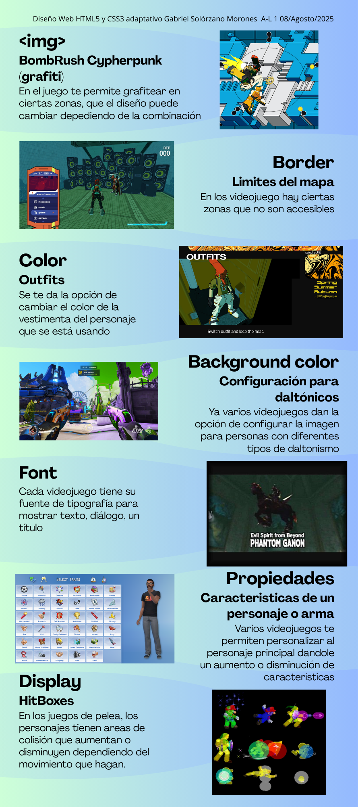

Diseño Web HTML5 y CSS3 adaptativo
Alexia Michelle Minjares Granados
A-L 1
09/Octubre/2025
DOM
Las siglas DOM significan Document Object Model, o lo que es lo mismo, la estructura de un documento HTML. Una página HTML está formada por múltiples etiquetas HTML, anidadas una dentro de otra, formando un árbol de etiquetas relacionadas entre sí
Dom de eventos
La animación del DOM se puede lograr modificando el estilo del elemento DOM con JavaScript. Cuando los cambios son graduales y el intervalo de tiempo es corto, la animación parece continua.
Se cambia el estilo del elemento DOM después de un intervalo de tiempo determinado para animarlo.
- Ejemplo con uso de JavaScript : proporciona la mayor flexibilidad, lo que le permite manipular dinámicamente las propiedades de estilo y crear animaciones complejas directamente dentro de su código JavaScript
- Se puede usar el método setInterval() para cambiar la posición del elemento DOM y moverlo de una posición a otra con animación.
Dom de animacion
Los eventos son cosas que pasan en el sistema que estás programando, el cual se encarga de avisarte para que tu código pueda hacer algo al respecto.
- Ejemplo: Si el usuario hace clic en el botón de una página web, puede que quieras reaccionar a esa acción y mostrar una tarjeta con información
Dom de CSS
El Modelo de objetos CSS (CSS Object Model) es un conjunto de APIs que permite manipular CSS desde JavaScript.
CSSOM (CSS Object Model) es para CSS
Tema 1
Viewport:
Es el área de la ventana en la que se puede ver el contenido web
Conferencias de IA:
Un tema importante que encontré en las conferencias fue la forma en la que describieron como nosotros como diseñadores podemos utilizar métodos como aumento de ruido en las imágenes que subamos en internet promocionando nuestro trabajo para que la IA no pueda analizar nuestros estilos de diseño y no peda replicarlos, también me gusto la historia de la recolección de imágenes de fotografías en un mercado de pulgas y como la persona utilizó esas fotos para presentarlas como un trabajo propio al transformarlo en no solo fotografías sino en contar una historia y que incluso utilizó
Picas: Unidad de longitud equivalente a 1/6 de pulgada (pc)
Puntos: Se utiliza en las tipografías 1/72 de pulgada (pt)
Unidades de medida relativas:
Em: Tamaño de la fuente del elemento del padre (Font size 16px)
Rem: Tamaño de la fuente del elemento raiz en (Root)
Ch: El ancho de la letra “0” del elemento
%: Porcentaje de dimensión del elemento contenedor del padre
Cqw/cqh: Undidades de contenedor que se adaptan al tamaño del contenedor especifico, no solo al padre
Vw: El ancho total de la ventana grafica
Vh: La altura total de la ventana grafica
Vmin: La dimensión más pequeña (ancho o alto) de la ventana gráfica.
Vmax: La dimensión más grande (ancho o alto) de la ventana gráfica.
Texto padre
Texto hijo
Texto rem
Investicacion:
Color animation:
Es una animación que cambia gradualmente el valor de un color en un elemento html que se combina con la propiedad transition o con reglas de @keyframes para crear efectos suaves.
Delay:
Define cuánto tiempo debe esperar una animación antes de comenzar, se puede medir en segundos (s) o milisegundos (ms) y suele usarse para escalonar animaciones o crear efectos de aparición.
Animation-timing-function:
Define la velocidad y aceleración con la que se reproduce una animación y controla cómo se distribuye el tiempo de los cuadros de la animación.
Animation-direction:
Controla la dirección en la que se reproduce una animación y cómo se comporta en ciclos repetitivos.
Animation-fill-mode:
Define cómo se aplican los estilos de la animación antes y después de que esta ocurra.
Investigacion

Estos son los graficos de temas previos
Diagrama de pagina Web con errores
Recreacion de pagina web y diagrama de flojo de videojuego